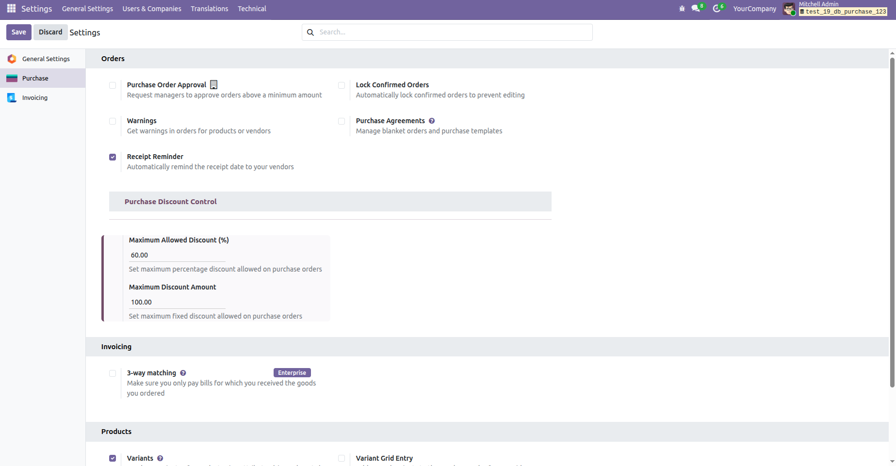
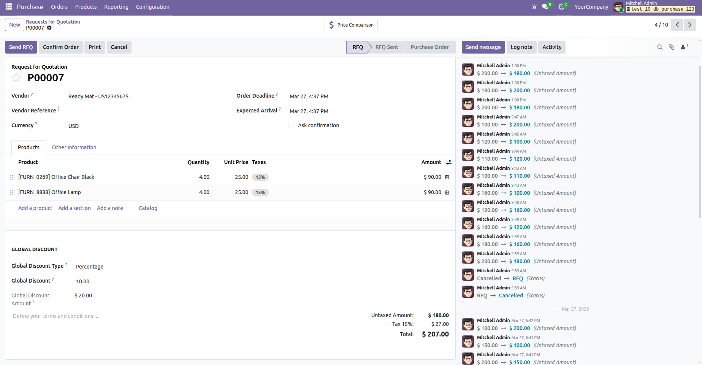
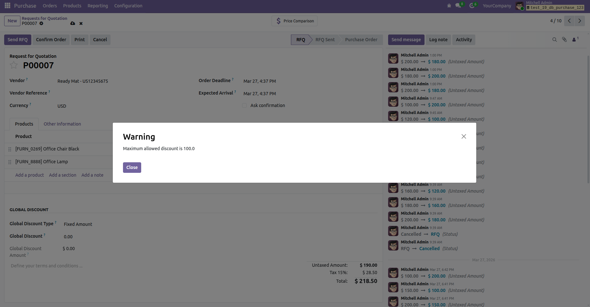

INOM Purchase Global Discount is a professional Odoo solution designed to apply global discounts on Purchase Orders. This module helps companies manage vendor discounts efficiently and maintain accurate purchase totals.
With this module installed, users can apply percentage or fixed discounts directly on purchase orders. The system automatically calculates totals and ensures proper financial tracking.
Managing vendor discounts manually can create calculation errors and inconsistent purchase records. INOM Purchase Global Discount simplifies this process by providing a centralized discount system directly inside purchase orders.
1. Create Purchase Order → Apply global discount.
2. Select discount type (Percentage / Amount).
3. System calculates discount automatically.
4. Confirm Purchase Order → Discount applied in total.
Below are preview images of the module interface and functionality.



Go to Purchase → Settings → Global Discount Settings
Configure:
• Discount type
• Discount value
• User permissions
For support, bug reports, or customization requests, please contact us:
Email: info@inomerp.in
We provide a one-time setup and installation service completely free of cost on Odoo Community Edition. Our technical team ensures proper installation, configuration, and deployment so you can start using the module smoothly.
Important Note:
Free support is provided for issues caused by the standard Odoo source code
related to this module. Issues caused by third-party modules or customizations
may be chargeable.
For demos, customization, or enterprise support, connect with our team:
https://www.inomerp.in/contactus